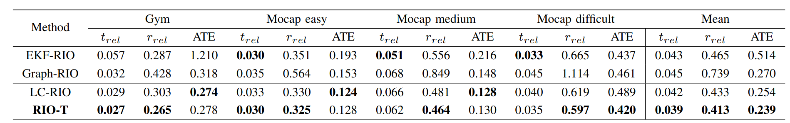

Results
Temporal offset analysis
Convergence of the temporal offset in the Gym sequence from the IRS dataset using the proposed method. The radar measurements were artificially shifted forward in time in steps of 2.5 ms to check whether the proposed method converges correctly to the expected offset values.
Convergence of the temporal offset in the Mocap difficult sequence from the IRS dataset using the proposed method. The radar measurements were artificially shifted by 112.15 ms to simulate the time delay of a radar of 100 ms as estimated temporal offset was -12.15 ms. We tested our method over three iterations to evaluate its convergence ability even with large temporal offsets.
Odometry analysis

The results show the advantage of integrating the temporal offset into the radar measurements and the state, achieving an accuracy that can compete with other modern radar inertial odometry algorithms and in some cases even surpasses them. The effect of estimating the temporal offset is particularly evident in the most dynamic sequence, Mocap difficult, where omitting the offset leads to the largest discrepancies, reducing the ATE by 14.11%.
Impact of temporal offset on radar-inertial odometry

Taking into account and correcting the temporal offset between radar and IMU significantly improves the accuracy of state-of-the-art radar-inertial odometry methods. Time offsets were estimated using our proposed method.
Visualization of the results on the Mocap dark sequence.
BibTeX
BibTex Code HereAcknowledgment
This research has been supported by the European Regional Development Fund under the grant PK.1.1.02.0008 (DATACROSS).